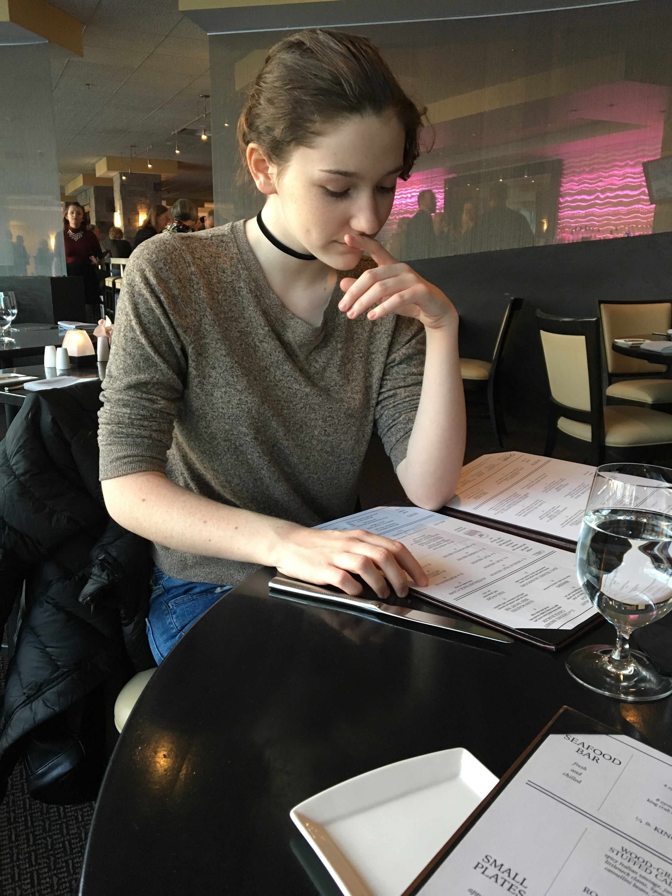
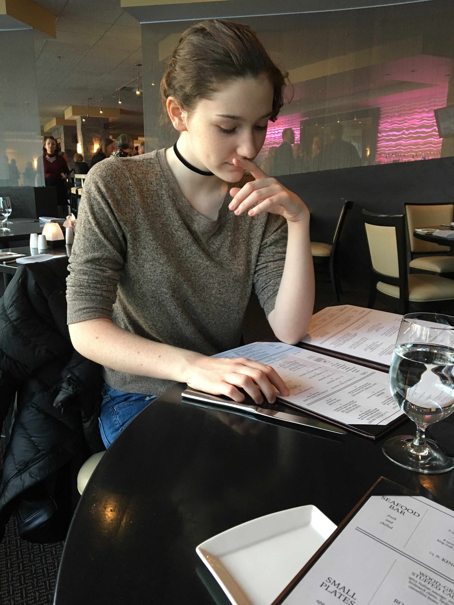

About Me
I enjoy many activities and aspects of life, but one of the biggest is music. Whether or not it is listening to music, reasurching famous artists and bands, playing music, writing music, or singing music, I enjoy it all. I guess you could call me a music junkie.
Although I enjoy a lot, I also dislike some activities. I do not enjoy fishing or anything that involves fish. I love swimming in the ocean and doing lake activities (canoeing, kayaking, paddleboarding, tubing, ext), but it takes me a lot to not have the fish bother me. I don't really understand why fish bother me so much, they just do for some reason.
I love designing and organizing. As an example, I re-organize my bedroom frequently as well as write/draw in my bullet journal frequently. Speaking of writing, it is one of my favorite pastimes. Ever since I was a fifth grader I have found interest in writing fictional stories, short stories, poems, and basically anything involving words/writing. Yet this interest is very ironic because I do not enjoy reading. If it is mandatory reading for school I strongly do not like it, but if it is reading for personal reasons I can talk myself into enjoying it. This is just very odd because my mother is an english teacher and my sister is an english major.
 
